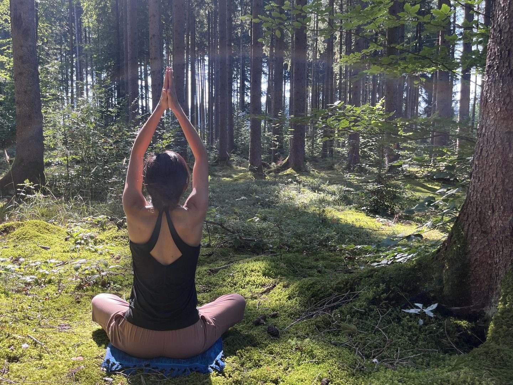

Le Viniyoga
Une approche du yoga centrée sur la personne, dans la lignée de Krishnamacharya.
Une lignée vivante
Le Viniyoga s'inscrit dans la tradition transmise par T. Krishnamacharya, considéré comme l'un des pères du yoga moderne, puis enseignée par son fils T.K.V. Desikachar. Cette lignée privilégie une transmission orale, attentive, où l'enseignant adapte la pratique à chaque élève plutôt que d'imposer une forme unique.
Adapter le yoga à la personne
Âge, condition physique, histoire du corps, moment de vie : tout est pris en compte pour construire une pratique juste. Une même posture peut être proposée différemment, modifiée ou simplifiée, afin que chacun en reçoive le bénéfice sans forcer. Le yoga devient un outil au service de la personne, et non un objectif à atteindre.

Le souffle au cœur de la pratique
Dans le Viniyoga, la respiration précède et guide le mouvement. Les postures se déroulent en coordination avec le souffle, souvent de façon dynamique avant une tenue plus longue. Pranayama, chant et méditation viennent compléter le travail corporel pour une pratique complète et apaisante.
Une progression respectueuse
La pratique avance pas à pas, sans recherche de performance ni de comparaison. Chaque séance s'inscrit dans une progression pensée sur la durée, pour installer une pratique personnelle, régulière et vivante, que l'on soit débutant ou pratiquant confirmé.